Cosa vuoi verniciare?
Impianti di verniciatura su misura per il legno e altri materiali: li progettiamo e costruiamo a Villatora di Saonara (PD) e li installiamo in Europa, Asia, Australia e Nord America.
Prova i tuoi pezzi in area test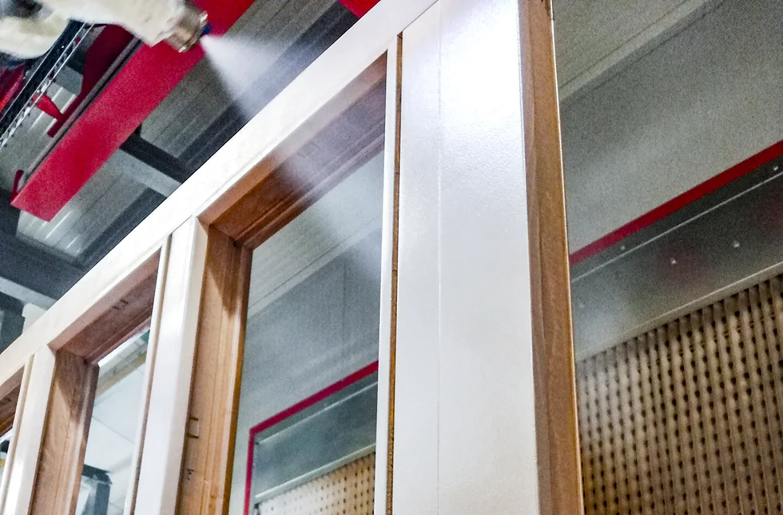
Anta con vetro appesa in cabina, sotto lo spruzzo.
Una linea per finestre
Per Distner, serramentista tedesco dal 1964: un Power&Free con 45 barre da 5 metri, due robot antropomorfi con cambio colore automatico su una superficie di lavoro di 5000 × 3000 mm, due flow coating verticali Superjet e Superjet Plus, due tunnel con sistema LDP per i prodotti ad acqua e un chiarificatore per le acque di lavaggio.
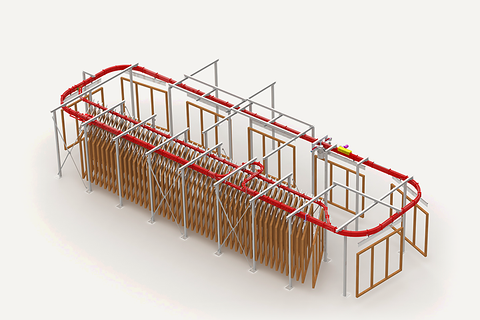
Trasportatore birotaia IMBPower&Free: barre variabili in linea e in accumulo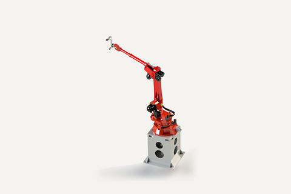
Robot antropomorfo RAS6 o più assi, 7° asse per profili di grandi dimensioni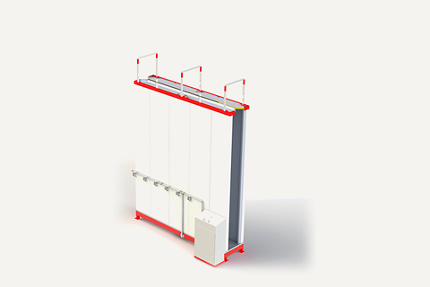
Superjet PlusCicli programmati: prelavaggio, lavaggio, cambio colore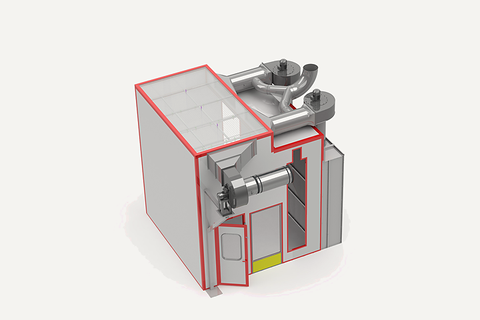
Cabina a ricircoloRicircolo fino al 90% dell'aria aspirata
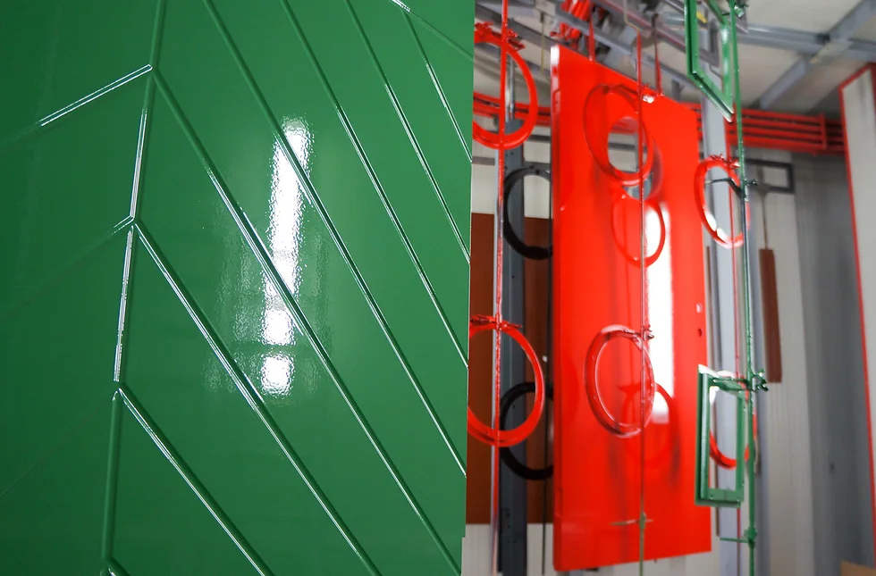
Porta a doghe laccata verde; dietro, una porta rossa appesa ai ganci del trasportatore.
Una linea per porte
Il Power&Free accumula, divide e dosa le porte secondo la capacità della linea. Si spruzza in cabine a secco DRY-A, oggi manuali e già predisposte per il robot; si asciuga nel tunnel Pro Dry con sistema LDP; il Supervisor segue ogni pezzo con l'RFID e imposta tempi, prodotti e numero di mani.
- Trasportatore birotaia IMBPower&Free: barre variabili in linea e in accumulo
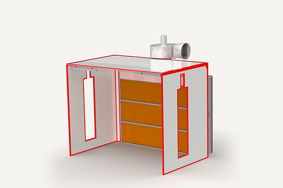
Cabina a secco DRY-AAspirazione a flusso orizzontale e verticale
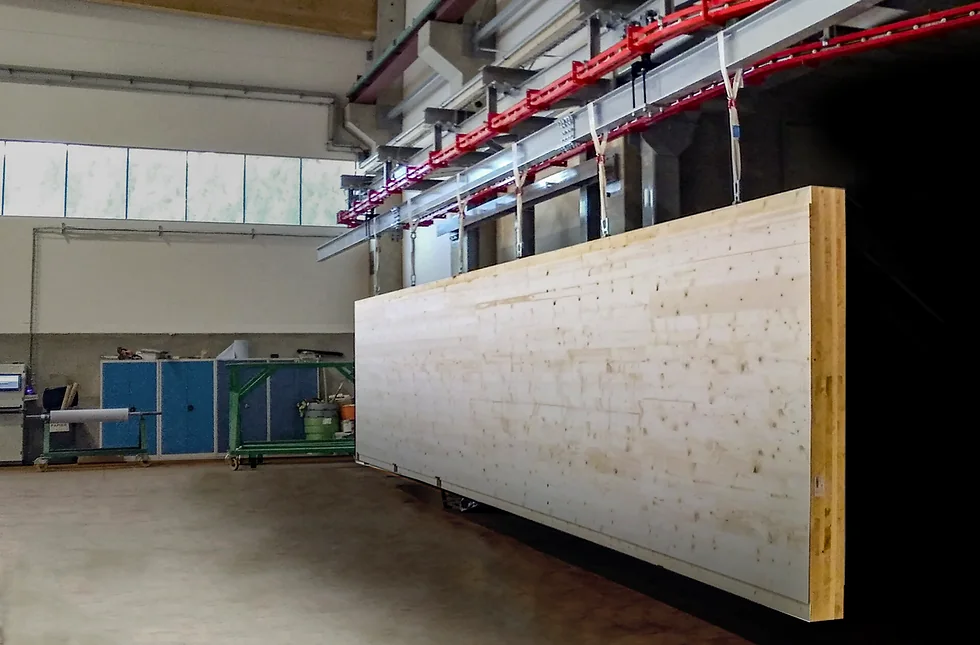
Pannello CLT appeso al trasportatore aereo.
Una linea per CLT e case in legno
Per travi, pareti e coperture: un Power&Free con 100 barre da 3500 mm, l'impregnazione nel flow coating Superjet, la cabina a secco DRY-A e il robot RAS in versione Large, a 6 assi, con 4000 × 2500 mm di superficie utile e un sensore laser che legge l'inclinazione dei pezzi.
- Trasportatore birotaia IMBPower&Free: barre variabili in linea e in accumulo
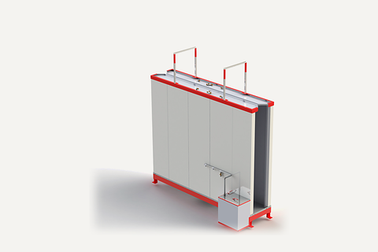
SuperjetFlow coating verticale, il prodotto in eccesso torna in circolo- Cabina a secco DRY-AAspirazione a flusso orizzontale e verticale
- Robot antropomorfo RASVersione Large, superficie utile 4000 × 2500 mm
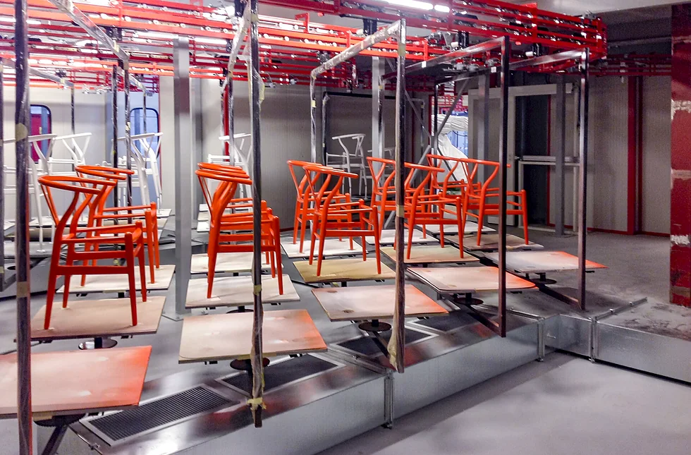
Sedie laccate arancio sui pianali del trasportatore a terra.
Sedie, tavoli e mobili
Sedie, tavoli, mobili ed elementi tridimensionali viaggiano sui trasportatori a terra, con supporti intercambiabili, su ruote o su binari sopraelevati, a passo fisso o variabile. Oppure appesi al trasportatore aereo.
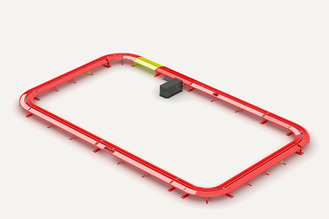
Trasportatore a terraSupporti intercambiabili, passo fisso o variabile- Trasportatore birotaia IMBPer elementi bi e tridimensionali
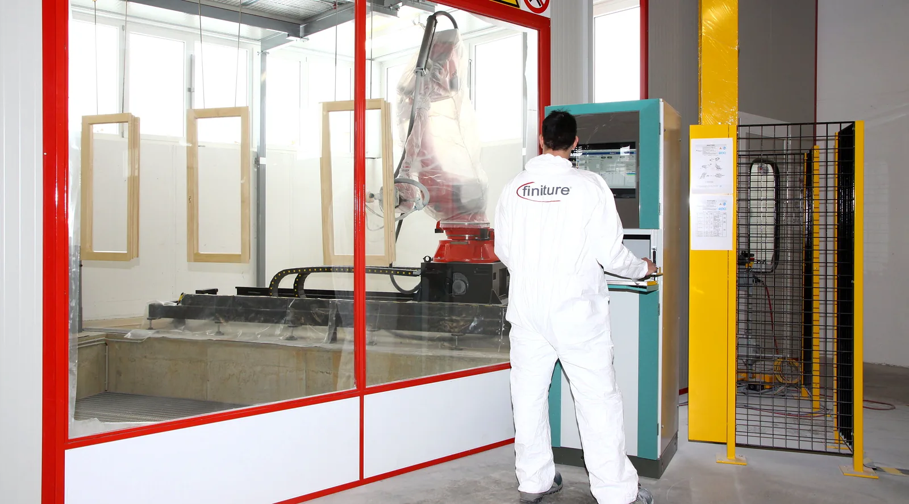
Cabina robot con telai in legno appesi; al quadro, un tecnico Finiture.
Prova i tuoi pezzi nella nostra area test
Flow coating verticale, robot di spruzzatura RAS, cabina, tunnel d'essiccazione con sistema LDP, ventilatori assiali e lampade alogene; in più una linea orizzontale per i profili. Il cliente fa le prove d'applicazione sui manufatti di sua produzione.
Chiedi una provaQuattro linee consegnate, barra per barra
Marco Sedino fonda la Mizar negli anni '50; dal 2000 è Finiture, oggi diretta da Giovanni Sedino. Oltre il 90% del nostro mercato è all'estero, l'assistenza parla italiano, inglese, tedesco e francese, e nel 2024 siamo stati tra i finalisti dell'Exporter of the Year di Confindustria Veneto Est.
Ogni trattino è una barra del trasportatore Power&Free, lungo in proporzione.
DistnerWiesau, Germania
45 barre da 5 m, due robot antropomorfi, superficie di lavoro di 5000 × 3000 mm
Setz FensterbauSchötz, Svizzera
40 barre da 6 m, due robot a 6 assi con scanner, pezzi fino a 6000 × 3500 mm
BruppacherFrancia
30 barre da 4 m, robot a 6 assi con cambio colore su 5 colori
MalenferVillers-Farlay, Francia
24 barre da 3 m, robot a 6 assi con cambio colore su 4 colori
Dal montaggio alla manutenzione: sempre dalla parte del cliente
Viale Veneto 13/15, 35020 Villatora di Saonara (PD)
Dal lunedì al venerdì, 8:30-12:00 e 14:00-17:30.
Assistenza in italiano, inglese, tedesco e francese.
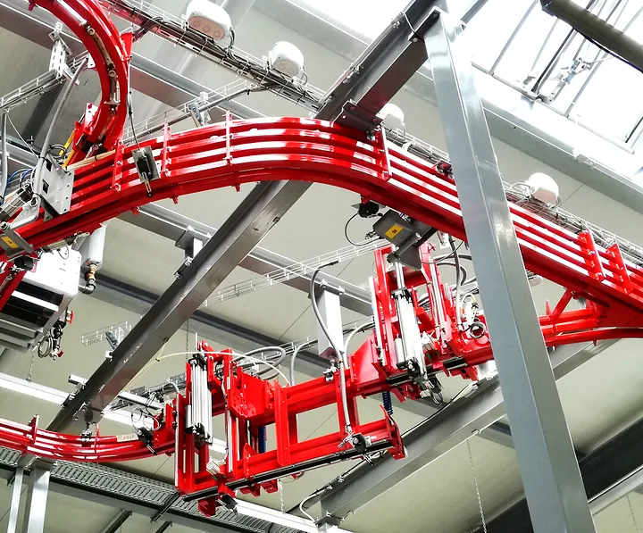